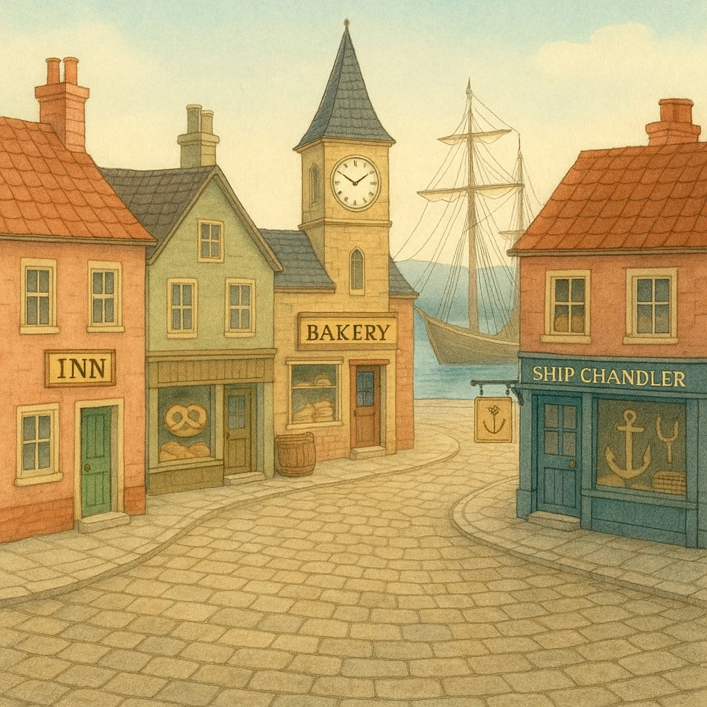
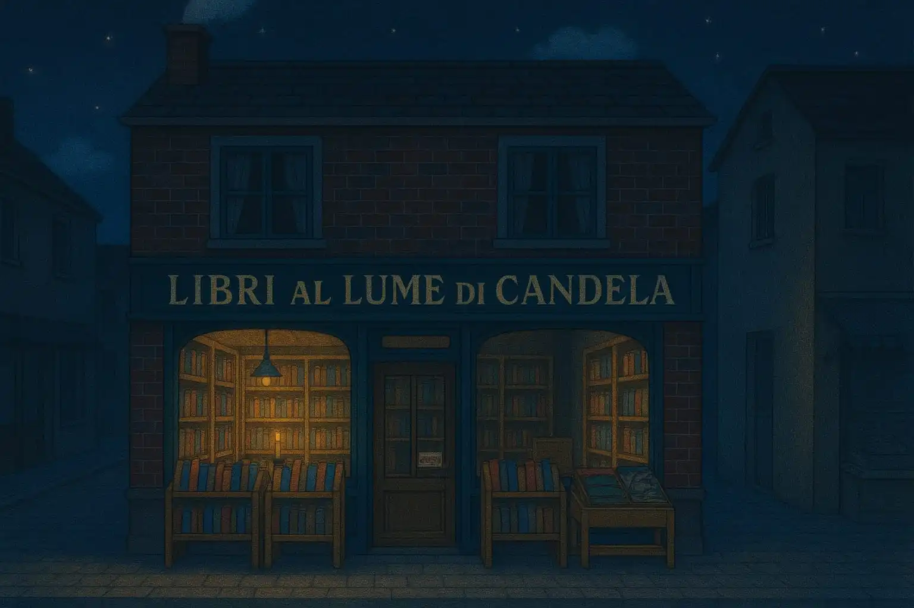

“È un sabato sera nel piccolo villaggio costiero chiamato Brindlewood Bay... Una figura
incappucciata osserva dalle tenebre la finestra illuminata...”
Questo incipit introduce perfettamente il gioco di ruolo I Misteri di Brindlewood
Bay, un GdR investigativo firmato da Jason Cordova e portato in Italia dalla
Compagnia delle 12 gemme, menzione speciale al premio Gioco di Ruolo dell’Anno
2024.
Brindlewood Bay: il Villaggio e le Signore del Giallo
Brindlewood Bay è un piccolo paese costiero del New England, un ex villaggio di balenieri trasformato in meta turistica. Al secondo piano della libreria “Libri al lume di candela” si riuniscono le Signore del Giallo, adorabili vecchiette che i giocatori interpreteranno per indagare su misteri degni della miglior Jessica Fletcher.



Come si Gioca
Il gioco è strutturato attorno alle mosse. Quando un’azione dei giocatori corrisponde a una delle sei mosse base, il Custode richiede un tiro di 2d6 più eventuali modificatori. Gli oggetti e le condizioni influenzano il risultato, che può portare alla scoperta di indizi o determinare l’esito delle azioni.
Ogni Signora del Giallo ha inoltre una mossa speciale ispirata a protagonisti dei telefilm degli anni ’70/’80, che arricchisce ulteriormente la narrazione.
Il Mistero e la Congettura
Quando gli indizi raccolti sono sufficienti, i giocatori possono utilizzare la mossa “Congetturare” per formulare la soluzione del caso. La particolarità? Nemmeno il Custode conosce la soluzione: sarà il tiro di dadi a stabilire se la teoria dei giocatori corrisponde alla realtà e con quale livello di successo.
La Campagna
I Misteri di Brindlewood Bay è pensato per campagne di 7-8 sessioni. Risolvendo i casi, le Signore scopriranno l’esistenza di un culto segreto ellenico che si intreccia con la vita del villaggio. Conclusa una campagna, si può creare una nuova Signora del Giallo e un nuovo culto, garantendo rigiocabilità infinita.
Punti di Forza
- La soluzione del mistero è sempre diversa, perché creata dai giocatori.
- Un equilibrio perfetto tra comicità e tensione.
- Creazione del personaggio rapida e divertente, con contributo di tutti al tavolo.
- Un’edizione italiana curata e di pregio grazie alla Compagnia delle 12 gemme.
Conclusioni
I Misteri di Brindlewood Bay è un GdR che trasforma i giocatori in detective improvvisati, tra gatti sulle ginocchia, biscotti al tè e segreti oscuri che si nascondono tra i vicoli del villaggio. Un’esperienza unica che non può mancare nella collezione di chi ama i giochi investigativi e narrativi.
Dove acquistare
Se vuoi aggiungere I Misteri di Brindlewood Bay alla tua collezione:
Ti è piaciuto questo articolo?
Seguici sui social per non perdere i prossimi contenuti!